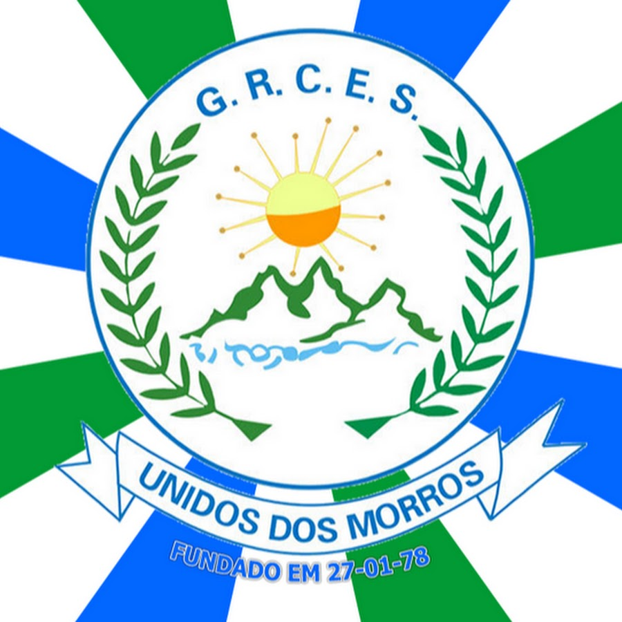
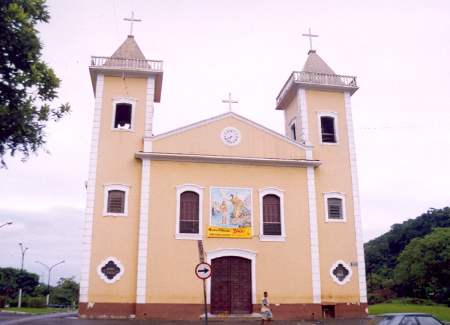
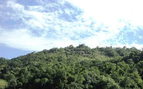
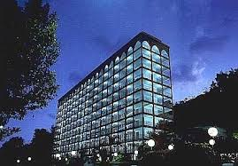

O Morro da Nova Cintra é um bairro histórico e de grande importância cultural em Santos, conhecido por sua localização em meio a áreas verdes e pela presença de lagos naturais, como o famoso Lago da Saudade. O nome "Nova Cintra" remonta ao século XIX, quando a área começou a ser ocupada por imigrantes portugueses, principalmente vindos da região de Cintra, em Portugal.
Cercada por uma vegetação exuberante e um clima de tranquilidade, a lagoa é um refúgio natural no coração da área urbana. É conhecida por sua história envolta em lendas e por ser um espaço de lazer para moradores e turistas, oferecendo trilhas, áreas de piquenique e atividades ao ar livre. A região ao redor da lagoa também possui valor cultural, destacando-se como cenário de eventos locais e ponto de convivência comunitária. A história sobre jacarés na Lagoa da Saudade tem raízes na cultura popular e em episódios reais ocorridos no local. Durante décadas, moradores relataram ter avistado jacarés na lagoa, alimentando lendas e especulações. Esses relatos, no entanto, foram confirmados em parte: há registros de jacarés-de-papo-amarelo sendo vistos e, em alguns casos, capturados na área. A história dos jacarés acabou se tornando parte do folclore local, agregando um toque de mistério à já fascinante Lagoa da Saudade.

Fundada em 1975, a agremiação é uma das principais representantes do carnaval santista e se destaca por sua forte ligação com a comunidade local. A escola valoriza temas que exaltam a história, a cultura e os personagens do próprio morro e da Baixada Santista, criando desfiles vibrantes e emocionantes. Com sua sede situada no coração do Morro da Nova Cintra, a Unidos dos Morros é também um ponto de convivência e integração social. Além do carnaval, promove eventos, oficinas e atividades culturais ao longo do ano, fortalecendo os laços da comunidade e incentivando a participação de jovens e adultos. Seu lema de união e alegria é refletido nos sambas-enredo que animam a avenida e mantêm viva a tradição do samba na região.
É um importante ponto de encontro espiritual e comunitário da região. Fundada para atender às necessidades religiosas dos moradores, a paróquia desempenha um papel central na vida da comunidade local. Dedicada a São João Batista, o santo padroeiro é celebrado com devoção especial durante as tradicionais festas juninas, que atraem fiéis e visitantes para momentos de oração, confraternização e alegria. Além das missas regulares, a paróquia promove diversas atividades pastorais, como catequese, grupos de jovens e ações sociais, que reforçam a sua presença como um pilar de apoio e solidariedade no bairro. Sua arquitetura simples e acolhedora reflete o espírito comunitário do Morro da Nova Cintra, sendo um espaço onde a fé e a convivência harmonizam-se com a paisagem cultural e natural do local.
A Pedra da Campina é um dos pontos naturais mais notáveis do Morro da Nova Cintra, na Baixada Santista. Este afloramento rochoso, localizado em uma área de vegetação preservada, é cercado por histórias e lendas que enriquecem o imaginário local. Além de sua imponência, a pedra oferece uma vista panorâmica da região, tornando-se um destino para os amantes da natureza e para aqueles que buscam momentos de contemplação e lazer. O local é frequentemente associado a atividades de aventura, como trilhas e escaladas, que atraem visitantes interessados em explorar as belezas do morro. Para os moradores, a Pedra da Campina não é apenas um atrativo turístico, mas também um símbolo da força e resiliência da comunidade que vive em harmonia com esse ambiente natural único.
é conhecido mundialmente como o maior cemitério vertical da América Latina. Fundado em 1983, o memorial é um marco arquitetônico e cultural, combinando modernidade, funcionalidade e respeito às diferentes crenças religiosas. Com 32 andares, o cemitério oferece nichos e espaços que aproveitam a verticalidade para otimizar o uso do terreno. Além de sua função prática, o local é cercado por um jardim tropical e uma arquitetura que integra a beleza natural do morro, criando um ambiente de serenidade. O espaço também se destaca por promover sustentabilidade, com projetos que reduzem o impacto ambiental, como o uso eficiente de energia e preservação do ecossistema ao redor. Ao longo dos anos, tornou-se um símbolo de inovação e de como o design pode estar a serviço de questões culturais e emocionais.
